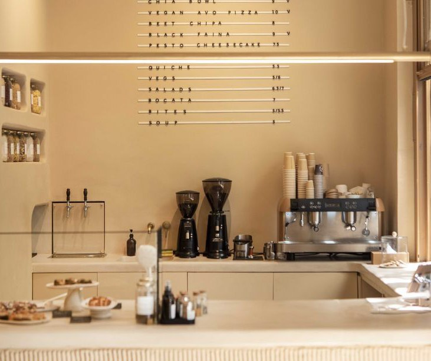
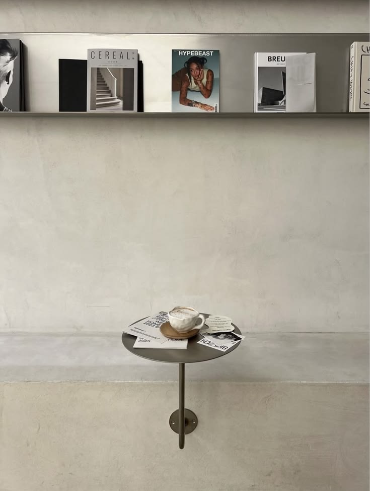
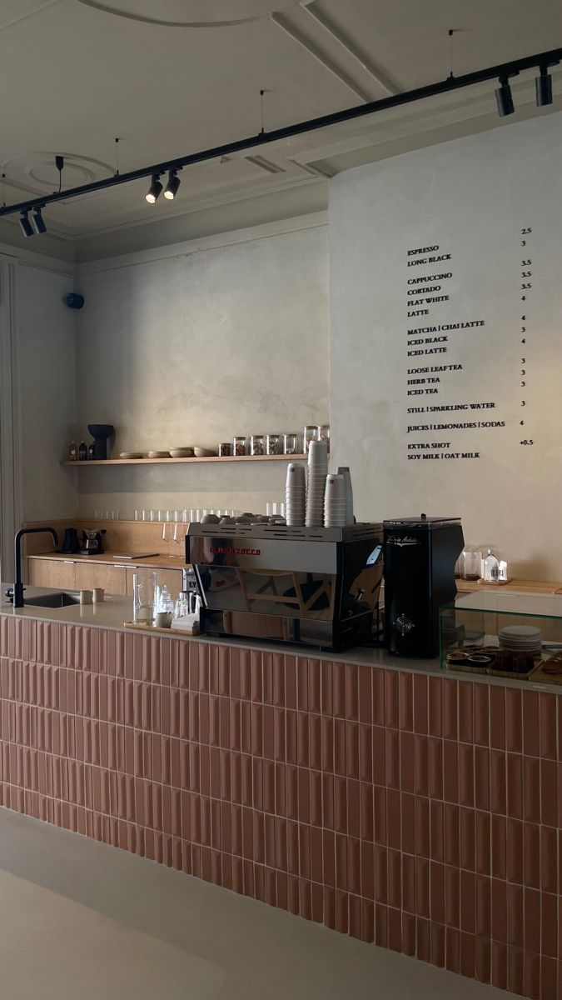

Honduras 4821
Palermo Soho
Indicaciones- Honduras 4821, C1414BMM Cdad. Autónoma de Buenos Aires, Argentina
- Mar a dom · 8 a 20 h
← 1 de 1 →

Palermo Soho
Indicaciones← 1 de 1 →
Martes a domingo de 8 a 20 h. Te esperamos con rolls recién horneados.


